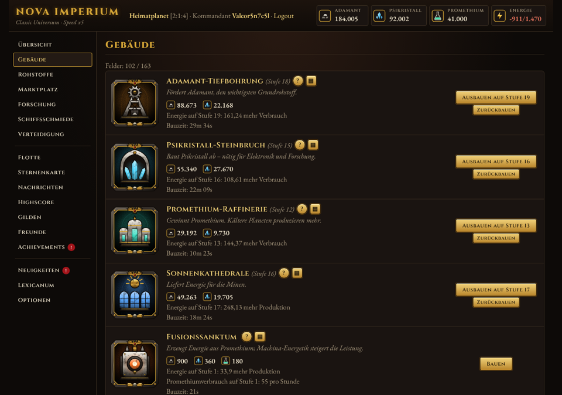
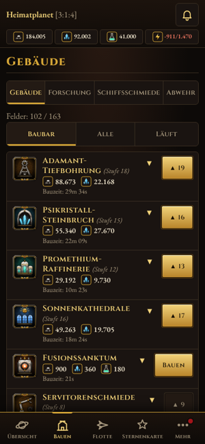

Studie [V] · Gebäude, Forschung, Schiffsschmiede, Abwehr als ein Katalog · Werte sind Beispiele · Styling bleibt [E]
Heute


Desktop: ein Katalog, nach Zustand gruppiert, mit Inspektor
NOVA IMPERIUM
Aurelia [1:27:8] ▾
Lager fast voll · 3 Welten
Lager fast voll · 3 Welten
voll in 6 h 10 min
voll in 1 h 40 min
+1.920 / h
7
ModernClassic
Übersicht
Planet
Bauen
Rohstoffe
Flotte
Sternenkarte
Berichte7
Imperium
Gemeinschaft
Lexicanum
Optionen
LÄUFT AUF AURELIA
Psikristall-Steinbruch 1622 min
Warp-Antrieb 53 h 12 min
12 Fregatten1 h 05 min
Bauen
Planet · Aurelia [1:27:8] · Felder 102 / 163
Dichte: normal ▾
Gebäude3 baubarForschung2Schiffsschmiede14Abwehr9Rohstoffe
BaubarBaldAlleProduktionLagerEnergieAusbausortiert: Nutzen · stabil
JETZT BAUBAR 3
Psikristall-SteinbruchStufe 15 → 16
+1.210 / h Psikristall · Energie
−48
22 minfertig 13:42
▲ Stufe 16
Psikristall-ReliquiarStufe 5 → 6
Lager +52.000 · sonst voll in 1 h 40
41 minfertig 14:01
▲ Stufe 6
SonnenkathedraleStufe 16 → 17
Energie +248 · behebt das Defizit
18 minfertig 13:38
▲ Stufe 17
BALD BAUBAR Rohstoffe fehlen, mit Zeitpunkt
Adamant-TiefbohrungStufe 18 → 19
+1.640 / h Adamant · Energie −61
fehlt 8.600 Psikristall
29 minleistbar in 1 h 10
ab 14:30
ServitorenschmiedeStufe 8 → 9
Bauzeit aller Gebäude −10 %
fehlt 14.200 Psikristall
1 h 52leistbar in 2 h 05
ab 15:25
GESPERRT 2 · eingeklappt
Weltenschmiede
braucht Machina-Schwarmhalle 1 · Machina-Energetik 12
(hast 8)
Weg zeigen
Psikristall-Steinbruch
Stufe 15 · nächste 16Bricht Psikristall ab – wichtig für Elektronik und Forschung.
WAS SICH ÄNDERT
Produktion27.670 → 28.880 / hEnergie der Welt−120 → −168Minen laufen mit94 % → 92 %
Energie reicht nicht. Erst die Sonnenkathedrale 17 bauen, dann
läuft alles mit 100 %.
KOSTEN
Bauzeit22 min 9 sfertig13:42
NÄCHSTE STUFEN (#187)
| Stufe | Prod./h | Kosten |
|---|---|---|
| 16 | 28.880 | 83 k |
| 17 | 31.400 | 133 k |
| 18 | 34.100 | 212 k |
Ausbauen auf 16Lexicanum
- Zeilen bleiben Zeilen (Beschluss D4 von #61 [E]), aber nach Zustand gruppiert: jetzt baubar, bald baubar mit Zeitpunkt, gesperrt eingeklappt (Forge of Empires blendet Unbrauchbares aus; Clash of Clans 2026: eine filterbare Liste).
- Kosten als Balken: wie viel da ist, was fehlt, ab wann leistbar – statt Zahlenwand.
- Wirkung in der Zeile: „+1.210 / h“, „Energie −48“, „Lager +52.000“; Details im Inspektor rechts.
- Inspektor zeigt die Folgen vor dem Klick (Energie, Minen-Prozent) und die nächsten Stufen (#187).
- Reiter statt Seiten: Gebäude, Forschung, Schiffsschmiede, Abwehr, Rohstoffe in einem Bereich; Zähler zeigen, wo etwas baubar ist.
- Feste Reihenfolge, Filter werden gemerkt (Forge of Empires und Clash of Clans mussten wechselnde Reihenfolgen nachbessern).
- Dichte-Schalter normal / kompakt für viele Einträge (EVE „compact mode“).
- Schiffe und Abwehr: gleiche Zeile, statt „▲“ ein Mengenfeld mit „max“ und der Bauzeit der Menge.
Handy: kompakte Zeilen, Details im Blatt
Aurelia ▾
7
6 h
1 h 40
+1.920/h
Bauen
GebäudeForschungWerftAbwehr
BaubarBaldAlle
JETZT BAUBAR
Psikristall-Steinbruch
+1.210/h · 22 min
Psikristall-Reliquiar
Lager +52 k · 41 min
Sonnenkathedrale
Energie +248 · 18 min
BALD BAUBAR
Adamant-Tiefbohrung
fehlt 8.600 Psikristall
Servitorenschmiede
fehlt 14.200 Psikristall
Aurelia ▾
7
6 h
1 h 40
+1.920/h
Bauen
GebäudeForschungWerftAbwehr
BaubarBaldAlle
JETZT BAUBAR
Psikristall-Steinbruch
+1.210/h · 22 min
Psikristall-Reliquiar
Lager +52 k · 41 min
Sonnenkathedrale
Energie +248 · 18 min
BALD BAUBAR
Adamant-Tiefbohrung
fehlt 8.600 Psikristall
Servitorenschmiede
fehlt 14.200 Psikristall
Psikristall-Steinbruch
15 → 16 · 22 min · fertig 13:42
Produktion+1.210 / hEnergie−48 (Defizit)
Erst Sonnenkathedrale 17, sonst Minen 92 %.
Ausbauen auf 16
- Entspricht #189 D2–D4 [E]: ein Tab „Bauen“ mit Umschalter, kompakte Zeile, Filter „Baubar“ als Vorgabe.
- Neu: Gruppen „jetzt“ / „bald“ und der Zeitpunkt, ab dem leistbar.
- Antippen öffnet das Blatt mit Folgen und Kosten statt die Zeile aufzuklappen.